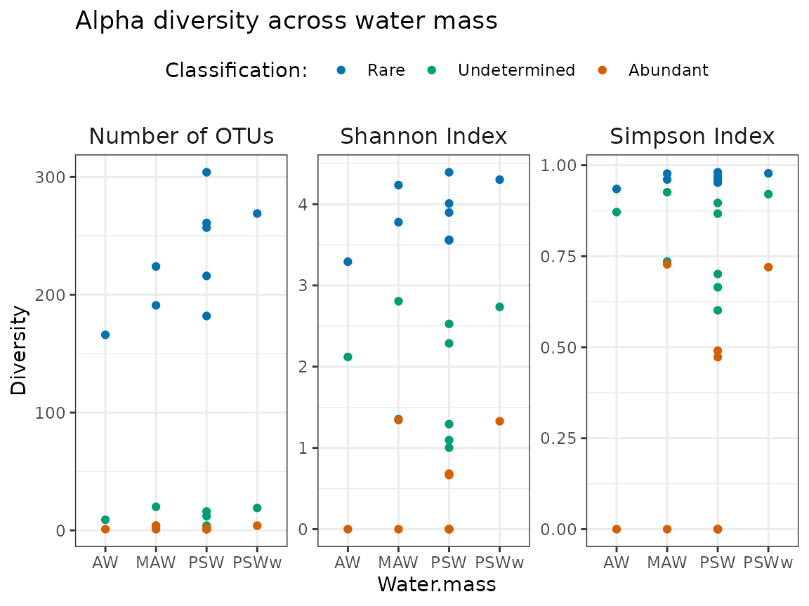

Integration of ulrb in a simple microbial ecology workflow
eco-analysis.RmdEcological analysis of microbial rare biosphere defined by ulrb
In this tutorial we will show how the output from
define_rb() can be readily used for some common ecological
analysis. In this case, we will just look at alpha diversity.
To do so, we have several steps:
- Load and clean OTU table (we just want prokaryotes);
- Rarefy samples (we show this option, because it is very common);
- Classify OTUs into rare, undetermined or abundant (with
define_rb()function); - Merge OTU table with metadata information;
- Calculate and plot alpha diversity metrics against environmental variables.
Quick overview of N-ICE dataset
The N-ICE dataset consists of 9 samples, collected during the winter to spring transition of 2015 by fixing the vessel on drifting ice (Granskog et al., 2018). Samples were collected at various depths (from 5m to 250m) and the ice drifted across different regions, DNA was collected for 16S amplicon sequencing and metagenomes (de Sousa et al., 2019); and bioinformatic processing of reads was performed by Mgnify platform (v5) (Mitchel et al., 2020).
For this tutorial we are using the OTU table downloaded from the link https://www.ebi.ac.uk/metagenomics/studies/MGYS00001922#analysis in 06-01-2023 and focus solely on the 16S amplicon data.
library(ulrb)
library(dplyr)
#>
#> Attaching package: 'dplyr'
#> The following objects are masked from 'package:stats':
#>
#> filter, lag
#> The following objects are masked from 'package:base':
#>
#> intersect, setdiff, setequal, union
library(tidyr)
library(vegan)
#> Loading required package: permute
#> Loading required package: lattice
#> This is vegan 2.6-4
library(ggplot2)
library(purrr)
#
set.seed(123)(a) Load and clean OTU table
# Load raw OTU table from N-ICE
load("../data/nice_raw.rda")
load("../data/nice_env.rda")
# Change name of first column
nice_clean <- rename(nice_raw, Taxonomy = "X.SampleID")
# Select 16S rRNA amplicon sequencing samples
selected_samples <- c("ERR2044662", "ERR2044663", "ERR2044664",
"ERR2044665", "ERR2044666", "ERR2044667",
"ERR2044668", "ERR2044669", "ERR2044670")
# Add a column with taxonomic units ID (OTU in this case)
nice_clean <- mutate(nice_clean, OTU = paste0("OTU_", row_number()))
# Select relevant collumns
nice_clean <- select(nice_clean, selected_samples, OTU, Taxonomy)
#> Warning: Using an external vector in selections was deprecated in tidyselect 1.1.0.
#> ℹ Please use `all_of()` or `any_of()` instead.
#> # Was:
#> data %>% select(selected_samples)
#>
#> # Now:
#> data %>% select(all_of(selected_samples))
#>
#> See <https://tidyselect.r-lib.org/reference/faq-external-vector.html>.
#> This warning is displayed once every 8 hours.
#> Call `lifecycle::last_lifecycle_warnings()` to see where this warning was
#> generated.
# Separate Taxonomy column into each taxonomic level
nice_clean <- separate(nice_clean, Taxonomy,
c("Domain","Kingdom","Phylum",
"Class","Order","Family","Genus","Species"),
sep=";")
#> Warning: Expected 8 pieces. Missing pieces filled with `NA` in 912 rows [1, 2, 4, 5, 6,
#> 7, 8, 9, 10, 11, 12, 13, 14, 15, 16, 17, 18, 19, 20, 21, ...].
# Remove Kingdom column, because it is not used for prokaryotes
nice_clean <- select(nice_clean, -Kingdom)
# Remove eukaryotes
nice_clean <- filter(nice_clean, Domain != "sk__Eukaryota")
# Remove unclassified OTUs at phylum level
nice_clean <- filter(nice_clean, !is.na(Phylum))
# Simplify name
nice <- nice_clean
# Check if everything looks normal
head(nice)
#> ERR2044662 ERR2044663 ERR2044664 ERR2044665 ERR2044666 ERR2044667 ERR2044668
#> 1 165 323 51 70 134 216 0
#> 2 0 0 1 0 0 1 0
#> 3 0 0 1 2 2 6 0
#> 4 541 1018 351 115 241 1633 177
#> 5 8 5 41 15 14 146 0
#> 6 15 31 590 133 174 1814 12
#> ERR2044669 ERR2044670 OTU Domain Phylum
#> 1 11 0 OTU_2 sk__Archaea p__Euryarchaeota
#> 2 0 0 OTU_3 sk__Archaea p__Euryarchaeota
#> 3 0 0 OTU_4 sk__Archaea p__Euryarchaeota
#> 4 1371 7 OTU_5 sk__Archaea p__Euryarchaeota
#> 5 14 0 OTU_6 sk__Archaea p__Thaumarchaeota
#> 6 173 2 OTU_7 sk__Archaea p__Thaumarchaeota
#> Class Order Family
#> 1 c__Candidatus_Poseidoniia <NA> <NA>
#> 2 c__Candidatus_Poseidoniia o__Candidatus_Poseidoniales f__
#> 3 c__Halobacteria o__Halobacteriales <NA>
#> 4 c__Thermoplasmata <NA> <NA>
#> 5 <NA> <NA> <NA>
#> 6 c__ o__ f__
#> Genus Species
#> 1 <NA> <NA>
#> 2 g__ s__Marine_group_II_euryarchaeote_REDSEA-S03_B6
#> 3 <NA> <NA>
#> 4 <NA> <NA>
#> 5 <NA> <NA>
#> 6 g__Candidatus_Nitrosopelagicus <NA>
# Change table to tidy format
# You can automatically do this with an ulrb function
nice_tidy <- prepare_tidy_data(nice, ## data to tidy
sample_names = contains("ERR"), ## vector with ID samples
samples_in = "cols") ## samples can be in columns (cols) or rows. (b) Rarefy samples
Now that we have a tidy table, it will be important to keep in mind
how the data is organized. In this tutorial, we will be using functions
like group_by() or nest(), if you are not
familiarized with them, try to search for tidyverse packages, functions
and mindset. We are also going to use the package vegan, which can be
used for most ecology statistics. Note, however, that vegan works with
matrices in very specific formats, so hopefully this sections will also
help you to see how you can use tidy verse approaches to very specific
data types.
The first step will be to verify how many reads each sample got
## First, check how many reads each sample got
nice_tidy %>%
group_by(Sample) %>% ## because data is in tidy format
summarise(TotalReads = sum(Abundance)) %>%
ggplot(aes(Sample, TotalReads)) +
geom_hline(yintercept = 40000) +
geom_col() +
theme_bw() +
coord_flip()All samples have more than about 50 000 reads, with one sample having a little bit less. But we think we can keep all samples and rarefy down to 40 000 reads.
(b) Classify OTUs into rare, undetermined or abundant (with
define_rb() function);
At this stage, we can simply apply the define_rb()
function, which will include a nesting and grouping step inside of
itself. For this reason, the data does not need to be grouped before the
function. During unit testing, however, we noticed that this could
introduce problems, so the function implicitly removes any grouping of
the tidy table used by the author. This way, only the pre-specific
grouping of the function is used. To have control over this, you just
need to be careful with the sample column, because ulrb method assumes
that the calculations are made “by sample” – so, it will do an
ungroup() followed by group_by(Sample).
In practice, this is very simple:
nice_classified <- define_rb(nice_tidy, simplified = TRUE)
#> Joining with `by = join_by(Sample, Level)`
head(nice_classified)
#> # A tibble: 6 × 17
#> # Groups: Sample, Classification [1]
#> Sample Classification OTU Domain Phylum Class Order Family Genus Species
#> <chr> <fct> <chr> <chr> <chr> <chr> <chr> <chr> <chr> <chr>
#> 1 ERR2044662 Rare OTU_2 sk__A… p__Eu… c__C… NA NA NA NA
#> 2 ERR2044662 Rare OTU_5 sk__A… p__Eu… c__T… NA NA NA NA
#> 3 ERR2044662 Rare OTU_6 sk__A… p__Th… NA NA NA NA NA
#> 4 ERR2044662 Rare OTU_7 sk__A… p__Th… c__ o__ f__ g__C… NA
#> 5 ERR2044662 Rare OTU_8 sk__A… p__Th… c__ o__N… NA NA NA
#> 6 ERR2044662 Rare OTU_… sk__A… p__Th… c__ o__N… f__Ni… g__N… NA
#> # ℹ 7 more variables: Abundance <int>, pam_object <list>, Level <fct>,
#> # Silhouette_scores <dbl>, Cluster_median_abundance <dbl>,
#> # median_Silhouette <dbl>, Evaluation <chr>By default, the function can give lots of details, but in this case,
since we are just going to look at the ecology component, and not at the
machine learning aspects of this, we can set the argument
simplified to TRUE. Note that the additional
computational time required for the additional details should be
negligible for small datasets (we don’t know how it behaves for bigger
datasets).
(c) Merge OTU table with metadata information
We are almost ready to analyze ecological questions, but first we need metadata. All we have to do is merge our classified OTU table with the metadata table. To do this we will use join functions from dplyr, just note that the sample ID from the two tables that we want to merge are different, but this is easy to solve.
(e) Calculate and plot diversity metrics against environmental variables.
At this point, we can calculate some common alpha diversity metrics. If we use the dplyr and ggplot functions, then it becomes really easy to make a simple overview of prokaryotic diversity, by classification.
# Calculate diversity
nice_diversity <- nice_eco %>%
group_by(Sample, Classification, Month, Depth, Water.mass) %>%
summarise(SpeciesRichness = specnumber(Abundance),
ShannonIndex = diversity(Abundance, index = "shannon"),
SimpsonIndex = diversity(Abundance, index = "simpson")) %>%
ungroup()
#> `summarise()` has grouped output by 'Sample', 'Classification', 'Month',
#> 'Depth'. You can override using the `.groups` argument.
## Re-organize table to have all diversity indices in a single col.
nice_diversity_tidy <- nice_diversity %>%
pivot_longer(cols = c("SpeciesRichness", "ShannonIndex", "SimpsonIndex"),
names_to = "Index",
values_to = "Diversity") %>%
# correct order
mutate(Month = factor(Month, levels = c("March", "April", "June"))) %>%
# edit diversity index names
mutate(Index = case_when(Index == "ShannonIndex" ~ "Shannon Index",
Index == "SimpsonIndex" ~ "Simpson Index",
TRUE ~ "Number of OTUs")) %>%
# order diversity index names
mutate(Index = factor(Index, c("Number of OTUs", "Shannon Index","Simpson Index")))Alpha diversity plots
At this stage, we have everything in a single tidy data.frame, which makes ggplot plots straightforward.
- Month variation
qualitative_colors <-
c("#E69F00", "#56B4E9", "#009E73", "#F0E442", "#0072B2", "#D55E00", "#CC79A7")
## Plots
nice_diversity_tidy %>%
ggplot(aes(Month, Diversity, col = Classification)) +
geom_point() +
facet_wrap(~Index, scales = "free_y")+
scale_color_manual(values = qualitative_colors[c(5,3,6)]) +
theme_bw() +
theme(strip.background = element_blank(),
strip.text = element_text(size = 12),
legend.position = "top") +
labs(col = "Classification: ",
title = "Alpha diversity across month")- Water mass variation
nice_diversity_tidy %>%
ggplot(aes(Water.mass, Diversity, col = Classification)) +
geom_point() +
facet_wrap(~Index, scales = "free_y")+
scale_color_manual(values = qualitative_colors[c(5,3,6)]) +
theme_bw() +
theme(strip.background = element_blank(),
strip.text = element_text(size = 12),
legend.position = "top") %>%
labs(col = "Classification: ",
title = "Alpha diversity across water mass")
Beta diversity
We can also do some basic beta diversity. Note that it might require a little bit more of data wrangling.
In this section, we will only focus on the rare biosphere.
- Months
rare_biosphere <-
nice_eco %>%
filter(Classification == "Rare") %>%
select(Sample, Abundance, OTU, Depth, Month, Water.mass) %>%
mutate(Sample_unique = paste(Sample, Month))
#> Adding missing grouping variables: `Classification`
rb_env <- rare_biosphere %>%
ungroup() %>%
select(Sample_unique, Depth, Water.mass, Month) %>%
distinct()
rb_sp_prep <- rare_biosphere %>%
ungroup() %>%
select(Sample_unique, Abundance, OTU)
rb_sp_prep %>% head() # sanity check
#> # A tibble: 6 × 3
#> Sample_unique Abundance OTU
#> <chr> <int> <chr>
#> 1 ERR2044662 March 165 OTU_2
#> 2 ERR2044662 March 541 OTU_5
#> 3 ERR2044662 March 8 OTU_6
#> 4 ERR2044662 March 15 OTU_7
#> 5 ERR2044662 March 5 OTU_8
#> 6 ERR2044662 March 4 OTU_10
rb_sp <-
rb_sp_prep %>%
tidyr::pivot_wider(names_from = "OTU",
values_from = "Abundance",
values_fn = list(count= list)) %>%
print() %>%
unchop(everything())
#> # A tibble: 9 × 523
#> Sample_unique OTU_2 OTU_5 OTU_6 OTU_7 OTU_8 OTU_10 OTU_15 OTU_17 OTU_21 OTU_22
#> <chr> <int> <int> <int> <int> <int> <int> <int> <int> <int> <int>
#> 1 ERR2044662 M… 165 541 8 15 5 4 19 1 61 123
#> 2 ERR2044663 M… 323 1018 5 31 10 2 30 1 83 296
#> 3 ERR2044664 M… 51 351 41 590 7 24 377 NA 2 209
#> 4 ERR2044665 A… 70 115 15 133 3 11 102 1 30 308
#> 5 ERR2044666 A… 134 241 14 174 10 10 83 1 48 405
#> 6 ERR2044667 A… 216 NA 146 NA 16 136 NA NA 5 NA
#> 7 ERR2044669 J… 11 NA 14 173 8 12 19 2 108 183
#> 8 ERR2044668 J… NA 177 NA 12 NA NA 4 2 132 165
#> 9 ERR2044670 J… NA 7 NA 2 NA NA 1 1 12 12
#> # ℹ 512 more variables: OTU_23 <int>, OTU_26 <int>, OTU_29 <int>, OTU_30 <int>,
#> # OTU_31 <int>, OTU_39 <int>, OTU_40 <int>, OTU_44 <int>, OTU_47 <int>,
#> # OTU_48 <int>, OTU_57 <int>, OTU_58 <int>, OTU_66 <int>, OTU_70 <int>,
#> # OTU_76 <int>, OTU_89 <int>, OTU_91 <int>, OTU_92 <int>, OTU_95 <int>,
#> # OTU_97 <int>, OTU_99 <int>, OTU_100 <int>, OTU_101 <int>, OTU_103 <int>,
#> # OTU_104 <int>, OTU_105 <int>, OTU_106 <int>, OTU_108 <int>, OTU_110 <int>,
#> # OTU_120 <int>, OTU_121 <int>, OTU_122 <int>, OTU_128 <int>, …
rb_sp[is.na(rb_sp)] <- 0
# Prepare aesthetics
rb_env <- rb_env %>%
mutate(col_month = case_when(Month == "March" ~ qualitative_colors[1],
Month == "April" ~ qualitative_colors[2],
TRUE ~ qualitative_colors[3])) %>%
mutate()
cca_plot_rare_biosphere <-
cca(rb_sp[,-1], display = "sites", scale = TRUE) %>%
plot(display = "sites", type = "p", main = "Rare biosphere")
#
cca_plot_rare_biosphere
#> $default
#> CA1 CA2
#> sit1 -0.7896653 0.8503868
#> sit2 -0.8239607 0.9143530
#> sit3 -0.2497625 -1.1717369
#> sit4 -0.3886150 -1.0134637
#> sit5 -0.7702444 0.1222861
#> sit6 -0.5394403 -3.0662464
#> sit7 0.9769221 -0.3825371
#> sit8 1.6462283 0.3933325
#> sit9 1.5573013 0.3989370
#>
#> attr(,"class")
#> [1] "ordiplot"
points(cca_plot_rare_biosphere,
bg = rb_env$col_month,
pch = 21,
col = "grey",
cex = 2)
#
with(rb_env,
ordispider(cca_plot_rare_biosphere,
Month, lty = "dashed", label = TRUE))From this analysis, it seems that the community composition of the rare biosphere is different between June and the remaining months.
Final considerations
Hopefully, you got a sense of how the ulrb package can be integrated in a more general microbial ecology workflow. Of course, many more questions could be approached, such as taxonomy and so on. This was meant to serve as an example of how ulrb can be trivially integrated in a data analysis workflow.
References
de Sousa, A. G. G., Tomasino, M. P., Duarte, P., Fernández-Méndez, M., Assmy, P., Ribeiro, H., Surkont, J., Leite, R. B., Pereira-Leal, J. B., Torgo, L., & Magalhães, C. (2019). Diversity and Composition of Pelagic Prokaryotic and Protist Communities in a Thin Arctic Sea-Ice Regime. Microbial Ecology, 78(2), 388–408.
Mitchell, A. L., Almeida, A., Beracochea, M., Boland, M., Burgin, J., Cochrane, G., Crusoe, M. R., Kale, V., Potter, S. C., Richardson, L. J., Sakharova, E., Scheremetjew, M., Korobeynikov, A., Shlemov, A., Kunyavskaya, O., Lapidus, A., & Finn, R. D. (2019). MGnify: the microbiome analysis resource in 2020. Nucleic Acids Research, 48(D1), D570–D578.
Granskog, M. A., Fer, I., Rinke, A., & Steen, H. (2018). Atmosphere-Ice-Ocean-Ecosystem Processes in a Thinner Arctic Sea Ice Regime: The Norwegian Young Sea ICE (N-ICE2015) Expedition. Journal of Geophysical Research: Oceans, 123(3), 1586–1594.